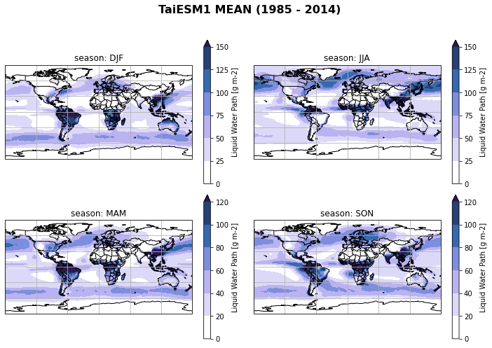

Example with high-resolution CMIP6 models (~100 km) using Pangeo catalog
Contents
Example with high-resolution CMIP6 models (~100 km) using Pangeo catalog¶
Time period¶
We will use data from 1985 to 2014.
Variables¶
shortname |
Long name |
Units |
levels |
|---|---|---|---|
prsn |
Snowfall Flux |
[kg m-2 s-1] |
surface |
clw |
Mass Fraction of Cloud Liquid Water |
[kg kg-1] |
ml |
cli |
Mass Fraction of Cloud Ice |
[kg kg-1] |
ml |
tas |
Near-Surface Air Temperature |
[K] |
surface |
ta |
Air Temperature |
[K] |
ml |
clivi |
Ice Water Path |
[kg m-2] |
|
lwp |
Liquid Water Path |
[kg m-2] |
|
pr |
Precipitation |
[kg m-2 s-1] |
surface |
Import python packages¶
# supress warnings
import warnings
warnings.filterwarnings('ignore') # don't output warnings
# import packages
import sys
sys.path.append('/uio/kant/geo-metos-u1/franzihe/Documents/Python/globalsnow/eosc-nordic-climate-demonstrator/work/utils')
from imports import (xr, intake, cftime, xe, glob, np, cm, pd, fct,ccrs, cy, plt,)
xr.set_options(display_style="html")
# %matplotlib inline
# reload imports
%load_ext autoreload
%autoreload 2
Open CMIP6 online catalog¶
cat_url = "https://storage.googleapis.com/cmip6/pangeo-cmip6.json"
col = intake.open_esm_datastore(cat_url)
col
pangeo-cmip6 catalog with 7768 dataset(s) from 521429 asset(s):
| unique | |
|---|---|
| activity_id | 18 |
| institution_id | 36 |
| source_id | 88 |
| experiment_id | 170 |
| member_id | 657 |
| table_id | 37 |
| variable_id | 709 |
| grid_label | 10 |
| zstore | 521429 |
| dcpp_init_year | 60 |
| version | 730 |
Search correspnding data¶
list_models = [
'NorESM2-MM',
'TaiESM1',
'EC-Earth3-AerChem',
'GFDL-ESM4',
'SAM0-UNICON',
'CAMS-CSM1-0',
'CMCC-CM2-HR4',
'MPI-ESM1-2-HR',
'BCC-CSM2-MR',
'E3SM-1-1',
'CMCC-CM2-SR5',
'CMCC-ESM2',
'FGOALS-f3-L',
'E3SM-1-1-ECA',
'CIESM',
'GFDL-CM4',
'MRI-ESM2-0']
variable_id=[
# 'prsn',
# 'clivi',
'lwp',
# 'tas',
# 'pr',
# 'clw'
]
cat = col.search(source_id=list_models, table_id = ['Amon', 'AERmon'], experiment_id=['historical'], variable_id=variable_id[0], member_id=['r1i1p1f1'])
cat.df
| activity_id | institution_id | source_id | experiment_id | member_id | table_id | variable_id | grid_label | zstore | dcpp_init_year | version | |
|---|---|---|---|---|---|---|---|---|---|---|---|
| 0 | CMIP | NOAA-GFDL | GFDL-ESM4 | historical | r1i1p1f1 | AERmon | lwp | gr1 | gs://cmip6/CMIP6/CMIP/NOAA-GFDL/GFDL-ESM4/hist... | NaN | 20190726 |
| 1 | CMIP | NCC | NorESM2-MM | historical | r1i1p1f1 | AERmon | lwp | gn | gs://cmip6/CMIP6/CMIP/NCC/NorESM2-MM/historica... | NaN | 20191108 |
| 2 | CMIP | EC-Earth-Consortium | EC-Earth3-AerChem | historical | r1i1p1f1 | AERmon | lwp | gr | gs://cmip6/CMIP6/CMIP/EC-Earth-Consortium/EC-E... | NaN | 20200624 |
| 3 | CMIP | AS-RCEC | TaiESM1 | historical | r1i1p1f1 | AERmon | lwp | gn | gs://cmip6/CMIP6/CMIP/AS-RCEC/TaiESM1/historic... | NaN | 20200630 |
cat.df['source_id'].unique()
array(['GFDL-ESM4', 'NorESM2-MM', 'EC-Earth3-AerChem', 'TaiESM1'],
dtype=object)
Create dictionary from the list of datasets we found¶
This step may take several minutes so be patient!
# pass rename_cmip6 to consistently label coordinates
dset_dict = cat.to_dataset_dict(zarr_kwargs={'use_cftime':True,}, )#preprocess=rename_cmip6)#'use_cftime':True})'decode_times':False
--> The keys in the returned dictionary of datasets are constructed as follows:
'activity_id.institution_id.source_id.experiment_id.table_id.grid_label'
100.00% [4/4 00:01<00:00]
list(dset_dict.keys())
['CMIP.NCC.NorESM2-MM.historical.AERmon.gn',
'CMIP.EC-Earth-Consortium.EC-Earth3-AerChem.historical.AERmon.gr',
'CMIP.NOAA-GFDL.GFDL-ESM4.historical.AERmon.gr1',
'CMIP.AS-RCEC.TaiESM1.historical.AERmon.gn']
# show coordinates
for k, ds in dset_dict.items():
print(k)
print(list(ds.dims))
CMIP.NCC.NorESM2-MM.historical.AERmon.gn
['lat', 'bnds', 'lon', 'member_id', 'time']
CMIP.EC-Earth-Consortium.EC-Earth3-AerChem.historical.AERmon.gr
['lat', 'bnds', 'lon', 'member_id', 'time']
CMIP.NOAA-GFDL.GFDL-ESM4.historical.AERmon.gr1
['bnds', 'lat', 'lon', 'member_id', 'time']
CMIP.AS-RCEC.TaiESM1.historical.AERmon.gn
['lat', 'bnds', 'lon', 'member_id', 'time']
Double check the time axis. Are they having the same calendar?
# metadata of the historical run:
_d2 = pd.Series(["calendar",
"branch_time_in_parent", #"parent_activity_id", "parent_experiment_id", "parent_mip_era",
"parent_source_id",#"parent_sub_experiment_id",
"parent_time_units",# "parent_variant_label"
])
for i in dset_dict.keys():
_data = []
_names =[]
_data.append(dset_dict[i].time.to_index().calendar)
for k, v in dset_dict[i].attrs.items():
if 'parent_time_units' in k or 'branch_time_in_parent' in k or 'parent_source_id' in k:
_data.append(v)
_names.append(k)
_d2 = pd.concat([_d2, pd.Series(_data)], axis=1)
_d2.rename(columns={1:i.split('.')[2]}, inplace=True)
_d2.rename(columns={0:i.split('.')[2]}, inplace=True)
_d2.dropna(how='all', axis=1, inplace=True)
_d2
| NorESM2-MM | NorESM2-MM | EC-Earth3-AerChem | GFDL-ESM4 | TaiESM1 | |
|---|---|---|---|---|---|
| 0 | calendar | noleap | proleptic_gregorian | noleap | noleap |
| 1 | branch_time_in_parent | 438000.0 | 0.0 | 36500.0 | 171550.0 |
| 2 | parent_source_id | NorESM2-MM | EC-Earth3-AerChem | GFDL-ESM4 | TaiESM1 |
| 3 | parent_time_units | days since 0001-01-01 | days since 1850-01-01 | days since 0001-1-1 | days since 1850-01-01 |
Use data as xarray to make a simple plot¶
if variable_id[0] == 'lwp':
ds = dset_dict['CMIP.NCC.NorESM2-MM.historical.AERmon.gn']
else:
ds = dset_dict['CMIP.NCC.NorESM2-MM.historical.Amon.gn']
ds
<xarray.Dataset>
Dimensions: (lat: 192, bnds: 2, lon: 288, member_id: 1, time: 1980)
Coordinates:
* lat (lat) float64 -90.0 -89.06 -88.12 -87.17 ... 88.12 89.06 90.0
lat_bnds (lat, bnds) float64 dask.array<chunksize=(192, 2), meta=np.ndarray>
* lon (lon) float64 0.0 1.25 2.5 3.75 5.0 ... 355.0 356.2 357.5 358.8
lon_bnds (lon, bnds) float64 dask.array<chunksize=(288, 2), meta=np.ndarray>
* time (time) object 1850-01-16 12:00:00 ... 2014-12-16 12:00:00
time_bnds (time, bnds) object dask.array<chunksize=(1980, 2), meta=np.ndarray>
* member_id (member_id) <U8 'r1i1p1f1'
Dimensions without coordinates: bnds
Data variables:
lwp (member_id, time, lat, lon) float32 dask.array<chunksize=(1, 290, 192, 288), meta=np.ndarray>
Attributes: (12/54)
Conventions: CF-1.7 CMIP-6.2
activity_id: CMIP
branch_method: Hybrid-restart from year 1200-01-01 of piControl
branch_time: 0.0
branch_time_in_child: 0.0
branch_time_in_parent: 438000.0
... ...
tracking_id: hdl:21.14100/f9b5958a-4435-41e0-8075-d71b586fc78b
variable_id: lwp
variant_label: r1i1p1f1
version_id: v20191108
intake_esm_varname: ['lwp']
intake_esm_dataset_key: CMIP.NCC.NorESM2-MM.historical.AERmon.gnxarray.Dataset
- lat: 192
- bnds: 2
- lon: 288
- member_id: 1
- time: 1980
- lat(lat)float64-90.0 -89.06 -88.12 ... 89.06 90.0
- axis :
- Y
- bounds :
- lat_bnds
- long_name :
- Latitude
- standard_name :
- latitude
- units :
- degrees_north
array([-90. , -89.057592, -88.115183, -87.172775, -86.230366, -85.287958, -84.34555 , -83.403141, -82.460733, -81.518325, -80.575916, -79.633508, -78.691099, -77.748691, -76.806283, -75.863874, -74.921466, -73.979058, -73.036649, -72.094241, -71.151832, -70.209424, -69.267016, -68.324607, -67.382199, -66.439791, -65.497382, -64.554974, -63.612565, -62.670157, -61.727749, -60.78534 , -59.842932, -58.900524, -57.958115, -57.015707, -56.073298, -55.13089 , -54.188482, -53.246073, -52.303665, -51.361257, -50.418848, -49.47644 , -48.534031, -47.591623, -46.649215, -45.706806, -44.764398, -43.82199 , -42.879581, -41.937173, -40.994764, -40.052356, -39.109948, -38.167539, -37.225131, -36.282723, -35.340314, -34.397906, -33.455497, -32.513089, -31.570681, -30.628272, -29.685864, -28.743455, -27.801047, -26.858639, -25.91623 , -24.973822, -24.031414, -23.089005, -22.146597, -21.204188, -20.26178 , -19.319372, -18.376963, -17.434555, -16.492147, -15.549738, -14.60733 , -13.664921, -12.722513, -11.780105, -10.837696, -9.895288, -8.95288 , -8.010471, -7.068063, -6.125654, -5.183246, -4.240838, -3.298429, -2.356021, -1.413613, -0.471204, 0.471204, 1.413613, 2.356021, 3.298429, 4.240838, 5.183246, 6.125654, 7.068063, 8.010471, 8.95288 , 9.895288, 10.837696, 11.780105, 12.722513, 13.664921, 14.60733 , 15.549738, 16.492147, 17.434555, 18.376963, 19.319372, 20.26178 , 21.204188, 22.146597, 23.089005, 24.031414, 24.973822, 25.91623 , 26.858639, 27.801047, 28.743455, 29.685864, 30.628272, 31.570681, 32.513089, 33.455497, 34.397906, 35.340314, 36.282723, 37.225131, 38.167539, 39.109948, 40.052356, 40.994764, 41.937173, 42.879581, 43.82199 , 44.764398, 45.706806, 46.649215, 47.591623, 48.534031, 49.47644 , 50.418848, 51.361257, 52.303665, 53.246073, 54.188482, 55.13089 , 56.073298, 57.015707, 57.958115, 58.900524, 59.842932, 60.78534 , 61.727749, 62.670157, 63.612565, 64.554974, 65.497382, 66.439791, 67.382199, 68.324607, 69.267016, 70.209424, 71.151832, 72.094241, 73.036649, 73.979058, 74.921466, 75.863874, 76.806283, 77.748691, 78.691099, 79.633508, 80.575916, 81.518325, 82.460733, 83.403141, 84.34555 , 85.287958, 86.230366, 87.172775, 88.115183, 89.057592, 90. ]) - lat_bnds(lat, bnds)float64dask.array<chunksize=(192, 2), meta=np.ndarray>
Array Chunk Bytes 3.00 kiB 3.00 kiB Shape (192, 2) (192, 2) Count 2 Tasks 1 Chunks Type float64 numpy.ndarray - lon(lon)float640.0 1.25 2.5 ... 356.2 357.5 358.8
- axis :
- X
- bounds :
- lon_bnds
- long_name :
- Longitude
- standard_name :
- longitude
- units :
- degrees_east
array([ 0. , 1.25, 2.5 , ..., 356.25, 357.5 , 358.75])
- lon_bnds(lon, bnds)float64dask.array<chunksize=(288, 2), meta=np.ndarray>
Array Chunk Bytes 4.50 kiB 4.50 kiB Shape (288, 2) (288, 2) Count 2 Tasks 1 Chunks Type float64 numpy.ndarray - time(time)object1850-01-16 12:00:00 ... 2014-12-...
- axis :
- T
- bounds :
- time_bnds
- long_name :
- time
- standard_name :
- time
array([cftime.DatetimeNoLeap(1850, 1, 16, 12, 0, 0, 0, has_year_zero=True), cftime.DatetimeNoLeap(1850, 2, 15, 0, 0, 0, 0, has_year_zero=True), cftime.DatetimeNoLeap(1850, 3, 16, 12, 0, 0, 0, has_year_zero=True), ..., cftime.DatetimeNoLeap(2014, 10, 16, 12, 0, 0, 0, has_year_zero=True), cftime.DatetimeNoLeap(2014, 11, 16, 0, 0, 0, 0, has_year_zero=True), cftime.DatetimeNoLeap(2014, 12, 16, 12, 0, 0, 0, has_year_zero=True)], dtype=object) - time_bnds(time, bnds)objectdask.array<chunksize=(1980, 2), meta=np.ndarray>
Array Chunk Bytes 30.94 kiB 30.94 kiB Shape (1980, 2) (1980, 2) Count 2 Tasks 1 Chunks Type object numpy.ndarray - member_id(member_id)<U8'r1i1p1f1'
array(['r1i1p1f1'], dtype='<U8')
- lwp(member_id, time, lat, lon)float32dask.array<chunksize=(1, 290, 192, 288), meta=np.ndarray>
- cell_measures :
- area: areacella
- cell_methods :
- area: time: mean
- comment :
- The total mass of liquid water in cloud per unit area.
- history :
- 2019-11-25T21:59:50Z altered by CMOR: Converted units from 'kg/m2' to 'kg m-2'. 2019-11-25T21:59:51Z altered by CMOR: Converted type from 'd' to 'f'.
- long_name :
- Liquid Water Path
- original_name :
- TGCLDLWP
- original_units :
- kg/m2
- standard_name :
- atmosphere_mass_content_of_cloud_liquid_water
- units :
- kg m-2
Array Chunk Bytes 417.66 MiB 61.17 MiB Shape (1, 1980, 192, 288) (1, 290, 192, 288) Count 15 Tasks 7 Chunks Type float32 numpy.ndarray
- Conventions :
- CF-1.7 CMIP-6.2
- activity_id :
- CMIP
- branch_method :
- Hybrid-restart from year 1200-01-01 of piControl
- branch_time :
- 0.0
- branch_time_in_child :
- 0.0
- branch_time_in_parent :
- 438000.0
- cmor_version :
- 3.5.0
- contact :
- Please send any requests or bug reports to noresm-ncc@met.no.
- creation_date :
- 2019-11-25T21:59:51Z
- data_specs_version :
- 01.00.31
- experiment :
- all-forcing simulation of the recent past
- experiment_id :
- historical
- external_variables :
- areacella
- forcing_index :
- 1
- frequency :
- mon
- further_info_url :
- https://furtherinfo.es-doc.org/CMIP6.NCC.NorESM2-MM.historical.none.r1i1p1f1
- grid :
- finite-volume grid with 0.9x1.25 degree lat/lon resolution
- grid_label :
- gn
- history :
- 2019-11-25T21:59:51Z ; CMOR rewrote data to be consistent with CMIP6, CF-1.7 CMIP-6.2 and CF standards.
- initialization_index :
- 1
- institution :
- NorESM Climate modeling Consortium consisting of CICERO (Center for International Climate and Environmental Research, Oslo 0349), MET-Norway (Norwegian Meteorological Institute, Oslo 0313), NERSC (Nansen Environmental and Remote Sensing Center, Bergen 5006), NILU (Norwegian Institute for Air Research, Kjeller 2027), UiB (University of Bergen, Bergen 5007), UiO (University of Oslo, Oslo 0313) and UNI (Uni Research, Bergen 5008), Norway. Mailing address: NCC, c/o MET-Norway, Henrik Mohns plass 1, Oslo 0313, Norway
- institution_id :
- NCC
- license :
- CMIP6 model data produced by NCC is licensed under a Creative Commons Attribution ShareAlike 4.0 International License (https://creativecommons.org/licenses). Consult https://pcmdi.llnl.gov/CMIP6/TermsOfUse for terms of use governing CMIP6 output, including citation requirements and proper acknowledgment. Further information about this data, including some limitations, can be found via the further_info_url (recorded as a global attribute in this file) and at https:///pcmdi.llnl.gov/. The data producers and data providers make no warranty, either express or implied, including, but not limited to, warranties of merchantability and fitness for a particular purpose. All liabilities arising from the supply of the information (including any liability arising in negligence) are excluded to the fullest extent permitted by law.
- mip_era :
- CMIP6
- model_id :
- NorESM2-MM
- netcdf_tracking_ids :
- hdl:21.14100/f9b5958a-4435-41e0-8075-d71b586fc78b hdl:21.14100/3343463c-4542-4b26-b0e0-d79559c5b77c hdl:21.14100/5d4a6d5f-1f9f-4e41-8887-68b5ffe39f8a hdl:21.14100/ac07cd02-353c-4f62-92e9-b256b7b6efaa hdl:21.14100/da65a23a-c432-4c8d-b2d6-f443594313f2 hdl:21.14100/16d8fdcf-5159-4cff-a298-b996307ffa5d hdl:21.14100/7c3ca1dd-0cd4-4976-beae-dccb8bfc3db0 hdl:21.14100/03558b5b-8620-4d6e-8421-a6601dcc11c1 hdl:21.14100/851604fd-a73f-494c-934b-964f0a730f9b hdl:21.14100/f0847cda-d095-454a-9900-d11c47e9fd54 hdl:21.14100/c027f00a-d7ba-4f19-a3c8-1871388afb2f hdl:21.14100/9ab13e31-55a5-4160-b20a-c47a6dad3862 hdl:21.14100/ac8bbe71-9806-46a9-99a0-d46dd6b82b85 hdl:21.14100/0a93d27a-6f09-490a-9be9-9d77e1b63479 hdl:21.14100/c5e2b337-6993-41f7-8735-5ee11a4f138f hdl:21.14100/e3a2b693-6268-4619-b476-59abb0d16562 hdl:21.14100/55d8d8cd-52c8-4963-a2d9-930da892a0cc
- nominal_resolution :
- 100 km
- parent_activity_id :
- CMIP
- parent_experiment_id :
- piControl
- parent_mip_era :
- CMIP6
- parent_source_id :
- NorESM2-MM
- parent_sub_experiment_id :
- none
- parent_time_units :
- days since 0001-01-01
- parent_variant_label :
- r1i1p1f1
- physics_index :
- 1
- product :
- model-output
- realization_index :
- 1
- realm :
- aerosol
- run_variant :
- N/A
- source :
- NorESM2-MM (2017): aerosol: OsloAero atmos: CAM-OSLO (1 degree resolution; 288 x 192; 32 levels; top level 3 mb) atmosChem: OsloChemSimp land: CLM landIce: CISM ocean: MICOM (1 degree resolution; 360 x 384; 70 levels; top grid cell minimum 0-2.5 m [native model uses hybrid density and generic upper-layer coordinate interpolated to z-level for contributed data]) ocnBgchem: HAMOCC seaIce: CICE
- source_id :
- NorESM2-MM
- source_type :
- AOGCM AER BGC
- status :
- 2021-10-20;created; by gcs.cmip6.ldeo@gmail.com
- sub_experiment :
- none
- sub_experiment_id :
- none
- table_id :
- AERmon
- table_info :
- Creation Date:(24 July 2019) MD5:0bb394a356ef9d214d027f1aca45853e
- title :
- NorESM2-MM output prepared for CMIP6
- tracking_id :
- hdl:21.14100/f9b5958a-4435-41e0-8075-d71b586fc78b
- variable_id :
- lwp
- variant_label :
- r1i1p1f1
- version_id :
- v20191108
- intake_esm_varname :
- ['lwp']
- intake_esm_dataset_key :
- CMIP.NCC.NorESM2-MM.historical.AERmon.gn
ds[variable_id[0]].attrs
{'cell_measures': 'area: areacella',
'cell_methods': 'area: time: mean',
'comment': 'The total mass of liquid water in cloud per unit area.',
'history': "2019-11-25T21:59:50Z altered by CMOR: Converted units from 'kg/m2' to 'kg m-2'. 2019-11-25T21:59:51Z altered by CMOR: Converted type from 'd' to 'f'.",
'long_name': 'Liquid Water Path',
'original_name': 'TGCLDLWP',
'original_units': 'kg/m2',
'standard_name': 'atmosphere_mass_content_of_cloud_liquid_water',
'units': 'kg m-2'}
_month = ds[variable_id[0]].groupby('time.month').mean('time', keep_attrs = True)
_jan = _month.sel(month = 1)
fig, ax = plt.subplots(1,1,
figsize=[10,10],
subplot_kw={'projection':ccrs.Orthographic(30, 90)})
fig.suptitle('CMIP6 - high resolution (1985 - 2014)', fontsize=16, fontweight="bold")
# Plot cosmetics
ax.coastlines()
gl = ax.gridlines()
ax.add_feature(cy.feature.BORDERS);
gl.top_labels = False
im = _month.sel(month = 1).plot(ax=ax, transform=ccrs.PlateCarree(), add_colorbar = True,extend = 'max')
plt.tight_layout()
fig.subplots_adjust(top=1)
fig = plt.figure(1, figsize=[10,10])
ax = plt.subplot(1, 1, 1, projection=ccrs.Orthographic(0, 90))
ax.coastlines()
ds[variable_id[0]].sel(time=cftime.DatetimeNoLeap(1985, 1, 16, 12, 0, 0, 0)).plot(ax=ax, transform=ccrs.PlateCarree(), cmap='coolwarm')
<matplotlib.collections.QuadMesh at 0x7f2428077a60>
Get attributes (unique identifier)¶
ds.attrs['tracking_id']
'hdl:21.14100/f9b5958a-4435-41e0-8075-d71b586fc78b'
Regrid CMIP6 data to common NorESM2-MM grid¶
starty = 1985; endy = 2014
year_range = range(starty, endy+1)
# create dictionary for reggridded data
ds_gridded_dict = dict()
# Read in the output grid from NorESM
if variable_id[0] == 'lwp':
ds_out = dset_dict['CMIP.NCC.NorESM2-MM.historical.AERmon.gn'].isel(member_id = 0)
else:
ds_out = dset_dict['CMIP.NCC.NorESM2-MM.historical.Amon.gn'].isel(member_id = 0)
ds_out = ds_out.sel(time = ds_out.time.dt.year.isin(year_range)).squeeze()
counter = 0
for keys in dset_dict.keys():
# select only models which have atmospheric monthly values
amon = keys.split('.')[-2]
if amon == 'Amon' or amon == 'AERmon':
# select model name
model = keys.split('.')[2]
# select where data should be saved
filename = '{}_Amon_1deg_{}01_{}12.nc'.format(variable_id[0], starty, endy)
savepath = '/scratch/franzihe/output/CMIP6_hist/1deg/{}/'.format(model)
nc_out = savepath + filename
files = glob(nc_out)
# Input data from CMIP6 model to be regridded
ds_in = dset_dict[keys].isel(member_id = 0)
ds_in = ds_in.sel(time = ds_in.time.dt.year.isin(year_range)).squeeze()
# common time grid
ds_in['time'] = ds_out['time']
# Regrid data
ds_in_regrid = fct.regrid_data(ds_in, ds_out)
# Shift the longitude from 0-->360 to -180-->180 and sort by longitude and time
ds_in_regrid = ds_in_regrid.assign_coords(lon=(((ds_in_regrid.lon + 180) % 360) - 180)).sortby('lon').sortby('time')
ds_in_regrid = ds_in_regrid.reset_coords(names=['time_bnds', ], drop=True)
# create dataset with all models
ds_gridded_dict[model] = ds_in_regrid
# ds_in_regrid.close(); ds_in.close(); ds_out.close()
if nc_out in files:
print('{} is downloaded'.format(nc_out))
counter += 1
print('Have regridded in total: {:} files'.format(str(counter)))
else:
# Save to netcdf file
ds_in_regrid.to_netcdf(nc_out)
print('file written: {}'.format(nc_out))
Create weight file: bilinear_192x288_192x288.nc
Remove file bilinear_192x288_192x288.nc
using dimensions ('lat', 'lon') from data variable lwp as the horizontal dimensions for this dataset.
lwp True
/scratch/franzihe/output/CMIP6_hist/1deg/NorESM2-MM/lwp_Amon_1deg_198501_201412.nc is downloaded
Have regridded in total: 1 files
Create weight file: bilinear_256x512_192x288.nc
Remove file bilinear_256x512_192x288.nc
using dimensions ('lat', 'lon') from data variable lwp as the horizontal dimensions for this dataset.
lwp True
/scratch/franzihe/output/CMIP6_hist/1deg/EC-Earth3-AerChem/lwp_Amon_1deg_198501_201412.nc is downloaded
Have regridded in total: 2 files
Create weight file: bilinear_180x288_192x288.nc
Remove file bilinear_180x288_192x288.nc
using dimensions ('lat', 'lon') from data variable lwp as the horizontal dimensions for this dataset.
lwp True
/scratch/franzihe/output/CMIP6_hist/1deg/GFDL-ESM4/lwp_Amon_1deg_198501_201412.nc is downloaded
Have regridded in total: 3 files
Create weight file: bilinear_192x288_192x288.nc
Remove file bilinear_192x288_192x288.nc
using dimensions ('lat', 'lon') from data variable lwp as the horizontal dimensions for this dataset.
lwp True
/scratch/franzihe/output/CMIP6_hist/1deg/TaiESM1/lwp_Amon_1deg_198501_201412.nc is downloaded
Have regridded in total: 4 files
ds_gridded_dict.keys()
dict_keys(['NorESM2-MM', 'EC-Earth3-AerChem', 'GFDL-ESM4', 'TaiESM1'])
Connect all models into one Dataset with new coordinate ‘model’¶
_ds = list(ds_gridded_dict.values())
_coord = list(ds_gridded_dict.keys())
ds_cmip = xr.concat(objs=_ds, dim=_coord, coords="all").rename({'concat_dim':'model'})
ds_cmip = ds_cmip.drop('bnds')
ds_cmip[variable_id[0]].attrs
{'units': 'kg m-2',
'long_name': 'Liquid Water Path',
'standard_name': 'atmosphere_mass_content_of_cloud_liquid_water',
'comment': 'The total mass of liquid water in cloud per unit area.',
'original_name': 'TGCLDLWP',
'cell_methods': 'area: time: mean',
'cell_measures': 'area: areacella'}
if variable_id[0] == 'prsn':
ds_cmip[variable_id[0]] = ds_cmip[variable_id[0]]*86400
ds_cmip[variable_id[0]].attrs = {'units': 'mm day-1', 'long_name': 'Snowfall', 'comment': 'At surface; includes precipitation of all forms of water in the solid phase', 'cell_methods': 'area: time: mean', 'cell_measures': 'area: areacella'}
if variable_id[0] == 'clivi':
ds_cmip[variable_id[0]] = ds_cmip[variable_id[0]]*1000
ds_cmip[variable_id[0]].attrs = {'units': 'g m-2', 'long_name': 'Ice Water Path', 'comment': 'mass of ice water in the column divided by the area of the column (not just the area of the cloudy portion of the column). Includes precipitating frozen hydrometeors ONLY if the precipitating hydrometeor affects the calculation of radiative transfer in model.', 'cell_methods': 'area: time: mean', 'cell_measures': 'area: areacella'}
if variable_id[0] == 'lwp':
ds_cmip[variable_id[0]] = ds_cmip[variable_id[0]]*1000
ds_cmip[variable_id[0]].attrs = {'units': 'g m-2', 'long_name': 'Liquid Water Path', 'comment': 'The total mass of liquid water in cloud per unit area.', 'cell_methods': 'area: time: mean', 'cell_measures': 'area: areacella'}
if variable_id[0] == 'pr':
ds_cmip[variable_id[0]] = ds_cmip[variable_id[0]]*86400
ds_cmip[variable_id[0]].attrs = {'units': 'mm day-1', 'long_name': 'Precipitation', 'comment': 'includes both liquid and solid phases','cell_methods': 'area: time: mean', 'cell_measures': 'area: areacella'}
Create seasonal mean of all regridded models¶
…and plot seasonal mean of each individual model
ds_cmip[variable_id[0]+'_season_mean'] = ds_cmip[variable_id[0]].groupby('time.season').mean('time', keep_attrs=True)
for model in ds_cmip.model.values:
fct.plt_spatial_seasonal_mean(ds_cmip[variable_id[0]+'_season_mean'].sel(model=model), title='{} MEAN ({} - {})'.format(model,starty, endy))

Create model mean/spread of seasonal mean of all regridded models¶
ds_cmip[variable_id[0]+'_season_model_mean'] = ds_cmip[variable_id[0]+'_season_mean'].mean('model', keep_attrs=True, skipna = True)
ds_cmip[variable_id[0]+'_season_model_std'] = ds_cmip[variable_id[0]+'_season_mean'].std('model', keep_attrs=True, skipna = True)
if variable_id[0] == 'prsn':
label='Snowfall (mm$\,$day$^{-1}$)'
vmin = 0
vmax = 2.5
levels = 25
add_colorbar=False
vmin_std = vmin
vmax_std= 0.6
if variable_id[0] == 'pr':
label='Total precipitation (mm$\,$day$^{-1}$)'
vmin = 0
vmax=9
levels = 90
add_colorbar=False
vmin_std =vmin
vmax_std = 2.4
elif variable_id[0] == 'clivi':
label='Ice Water Path (g$\,$m$^{-2}$)'
vmin = 0
vmax=100
levels = 25
add_colorbar = False
vmin_std =vmin
vmax_std = 20
elif variable_id[0] == 'lwp':
label='Liquid Water Path (g$\,$m$^{-2}$)'
vmin = 0
vmax=100
levels = 25
add_colorbar = False
vmin_std =vmin
vmax_std = 20
elif variable_id[0] == 'tas':
label='2-m temperature (K)'
vmin = 246
vmax=300
levels = 40
add_colorbar = False
vmin_std = 0
vmax_std=6
fig, axs, im = fct.plt_spatial_seasonal_mean(ds_cmip[variable_id[0]+'_season_model_mean'], vmin, vmax, levels, add_colorbar=False, title='CMIP6 - high resolution (1985 - 2014)')
fig.subplots_adjust(right=0.8)
cbar_ax = fig.add_axes([1, 0.15, 0.025, 0.7])
cb = fig.colorbar(im, cax=cbar_ax, orientation="vertical", fraction=0.046, pad=0.04)
cb.set_label(label='MEAN - {}'.format(label), weight='bold')
plt.tight_layout()
axs[2].text(1,-0.12, ds_cmip.model.values.tolist()[0:5], size=12, ha="center",
transform=axs[2].transAxes, bbox ={'facecolor':'green',
'alpha':0.6,
'pad':5})
if len(ds_cmip.model.values.tolist()) > 4:
axs[2].text(1,-0.25, ds_cmip.model.values.tolist()[5:10], size=12, ha="center",
transform=axs[2].transAxes, bbox ={'facecolor':'green',
'alpha':0.6,
'pad':5})
if len(ds_cmip.model.values.tolist()) > 10:
axs[2].text(1,-0.38, ds_cmip.model.values.tolist()[10:-1], size=12, ha="center",
transform=axs[2].transAxes, bbox ={'facecolor':'green',
'alpha':0.6,
'pad':5})
# save figure to png
figdir = '/uio/kant/geo-metos-u1/franzihe/Documents/Figures/CMIP6/'
figname = '{}_season_mean_1deg_{}_{}.png'.format(variable_id[0], starty, endy)
plt.savefig(figdir + figname, format = 'png', bbox_inches = 'tight', transparent = False)
fig, axs, im = fct.plt_spatial_seasonal_mean(ds_cmip[variable_id[0]+'_season_model_mean'], vmin, vmax, levels, add_colorbar=False, title='CMIP6 - high resolution (1985 - 2014)')
fig.subplots_adjust(right=0.8)
cbar_ax = fig.add_axes([1, 0.15, 0.025, 0.7])
cb = fig.colorbar(im, cax=cbar_ax, orientation="vertical", fraction=0.046, pad=0.04)
cb.set_label(label='MEAN - {}'.format(label), weight='bold')
for ax, i in zip(axs, ds_cmip[variable_id[0]+'_season_model_std'].season):
sm = ds_cmip[variable_id[0]+'_season_model_std'].sel(season=i).plot.contour(ax=ax, transform=ccrs.PlateCarree(),
robust=True,
vmin = vmin_std, vmax = vmax_std,
levels = 6,
cmap=cm.lajolla,
add_colorbar=False)
cbar_ax = fig.add_axes([1.10, 0.15, 0.025, 0.7])
sb = fig.colorbar(sm, cax=cbar_ax, orientation="vertical", fraction=0.046, pad=0.04)
sb.set_label(label='STD - {}'.format(label), weight='bold')
plt.tight_layout()
axs[2].text(1,-0.12, ds_cmip.model.values.tolist()[0:5], size=12, ha="center",
transform=axs[2].transAxes, bbox ={'facecolor':'green',
'alpha':0.6,
'pad':5})
if len(ds_cmip.model.values.tolist()) > 4:
axs[2].text(1,-0.25, ds_cmip.model.values.tolist()[5:10], size=12, ha="center",
transform=axs[2].transAxes, bbox ={'facecolor':'green',
'alpha':0.6,
'pad':5})
if len(ds_cmip.model.values.tolist()) > 10:
axs[2].text(1,-0.38, ds_cmip.model.values.tolist()[10:-1], size=12, ha="center",
transform=axs[2].transAxes, bbox ={'facecolor':'green',
'alpha':0.6,
'pad':5})
# save figure to png
figdir = '/uio/kant/geo-metos-u1/franzihe/Documents/Figures/CMIP6/'
figname = '{}_season_mean_std_1deg_{}_{}.png'.format(variable_id[0], starty, endy)
plt.savefig(figdir + figname, format = 'png', bbox_inches = 'tight', transparent = False)
# savet to netcdf
filename = '{}_1deg_{}01_{}12.nc'.format(variable_id[0], starty, endy)
savepath = '/scratch/franzihe/output/CMIP6_hist/1deg/'
nc_out = savepath + filename
files = glob(nc_out)
counter = 0
# Save to netcdf file
if nc_out in files:
# print('{} is downloaded'.format(nc_out))
# counter += 1
# print('Have saved in total: {:} files'.format(str(counter)))
# else:
ds_cmip.to_netcdf(nc_out)
print('file written: .{}'.format(nc_out))
file written: ./scratch/franzihe/output/CMIP6_hist/1deg/lwp_1deg_198501_201412.nc